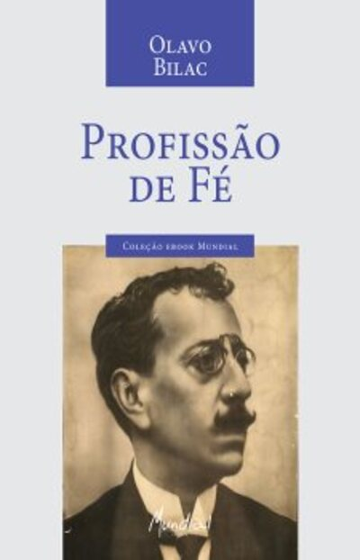
Profissão de Fé
Olavo Bilac
O Parnasianismo foi um movimento literário — focado essencialmente na poesia — que surgiu na França na segunda metade do século XIX, por volta de 1866, com a publicação da antologia poética Le Parnasse Contemporain (O Parnaso Contemporâneo). O nome do movimento faz referência ao monte Parnaso da mitologia grega, consagrado a Apolo e às musas. Os escritores parnasianos propuseram uma reação direta contra os excessos sentimentais, subjetivos e moralistas do Romantismo, defendendo uma poesia baseada na sobriedade, no rigor técnico e no princípio estético da "arte pela arte".
No Brasil, o Parnasianismo teve seu marco inicial em 1882 com a publicação do livro Fanfarras, de Teófilo Dias, embora a grande consagração do estilo tenha ocorrido com a publicação de O Occidente e das obras dos poetas que formavam a chamada "Tríade Parnasiana": Olavo Bilac, Alberto de Oliveira e Raimundo Correia. O movimento brasileiro destacou-se pelo preciosismo vocabular, pelo culto à métrica exata (especialmente o verso decassílabo e o alexandrino), pela rima rica e pela preferência por temas mitológicos, históricos, escultóricos e descritivos.
Os parnasianos viam o poeta como um ourives ou escultor das palavras, alguém que lapidava o verso com paciência e rigor técnico inegociáveis. Para eles, a poesia devia buscar a beleza formal e a perfeição plástica, distanciando-se dos problemas cotidianos, dos desabafos passionais e do engajamento político. Apesar de dominante na poesia brasileira da virada do século XIX para o século XX, o Parnasianismo acabou sendo alvo de duras críticas pelos modernistas na Semana de Arte Moderna de 1922, que o consideravam acadêmico, engessado e distante da realidade nacional.
O surgimento do Parnasianismo na Europa ocorreu em um cenário de intensa industrialização, consolidação do capitalismo burguês e ascensão do Positivismo e do Cientificismo. Na França, o movimento desenvolveu-se no contexto do Segundo Império de Napoleão III, período marcado por transformações urbanas drásticas (como a remodelação de Paris) e por um profundo ceticismo em relação aos ideais românticos e liberais idealizados no início do século XIX.
No Brasil, o Parnasianismo floresceu durante as últimas décadas do Império (governo de D. Pedro II) e nos primeiros anos da Primeira República (proclamada em 1889). Foi uma época de modernizações urbanas tímidas — como a modernização da capital, o Rio de Janeiro —, de consolidação do pensamento positivista entre as elites intelectuais e militares, e da abolição da escravidão (1888), seguida pela transição para o trabalho livre e pela expansão da economia cafeeira.
Embora o cenário político e social brasileiro passasse por transformações profundas, a literatura parnasiana manteve-se de costas para a realidade social imediata. Enquanto o Realismo e o Naturalismo denunciavam as mazelas da escravidão, a corrupção e os vícios da sociedade burguesa, o Parnasianismo refugiava-se na torre de marfim da estética pura, cultuando o passado clássico, a antiguidade greco-latina e a perfeição formal desprovida de engajamento político.
Economicamente, o final do século XIX foi marcado pelo avanço tecnológico da Segunda Revolução Industrial, pela expansão imperialista europeia e pelo crescimento do consumo urbano de massa. As cidades transformaram-se em centros dinâmicos, e a burguesia industrial e financeira consolidou sua hegemonia econômica e cultural, exigindo das artes uma postura mais racional, objetiva e alinhada ao progresso técnico e científico da época.
No Brasil, a economia girava em torno da exportação de café, especialmente no eixo sudeste (São Paulo, Rio de Janeiro e Minas Gerais), o que gerou um surto de urbanização e o fortalecimento de uma classe média urbana formada por profissionais liberais, burocratas e intelectuais. É nesse ambiente letrado das capitais que os poetas parnasianos encontram seu público leitor, nos saraus, academias e jornais da época.
A sociedade urbana buscava refúgio na cultura letrada e na erudição como símbolos de status e civilidade. A poesia parnasiana atendia a esse anseio burguês de ordem, elegância e bom gosto decorativo. A valorização do livro como objeto de arte, o rigor ortográfico e gramatical e o domínio de línguas e mitos clássicos funcionavam como elementos de distinção social para as elites cultas da Primeira República.

Olavo Bilac
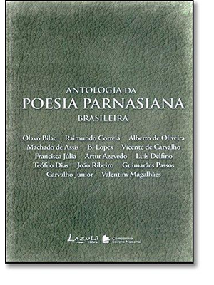
Alberto de Oliveira
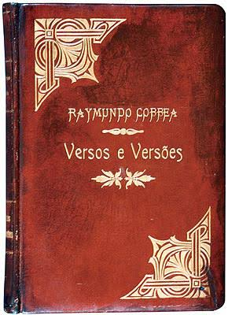
Raimundo Correia
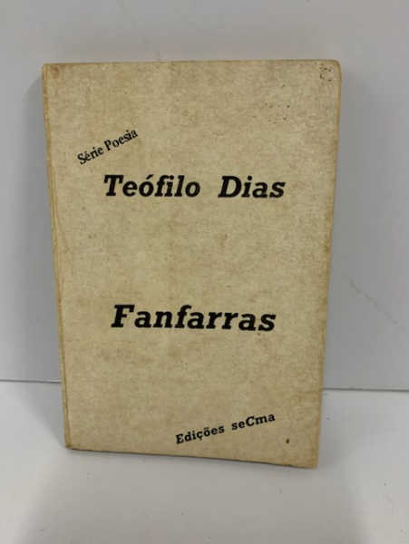
Teófilo Dias
Foco na representação detalhada de objetos, paisagens, obras de arte e elementos da natureza, com rigor plástico impecável.
Composições poéticas de forma fixa estruturadas em dois quartetos e dois tercetos, marcadas pela rigidez métrica e rimas ricas.
Versos que abordam questões existenciais universais, a melancolia humana, o tempo e a transitoriedade com sobriedade e elegância.
Resgate de episódios históricos grandiosos e figuras da mitologia greco-romana, cultuando a herança clássica universal.
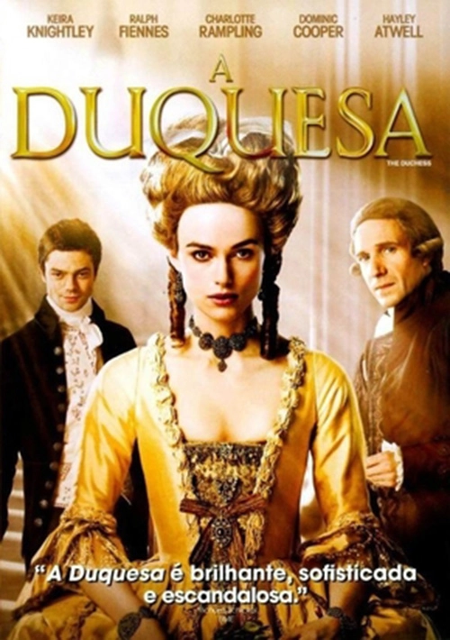
2008 • Dir. Saul Dibb
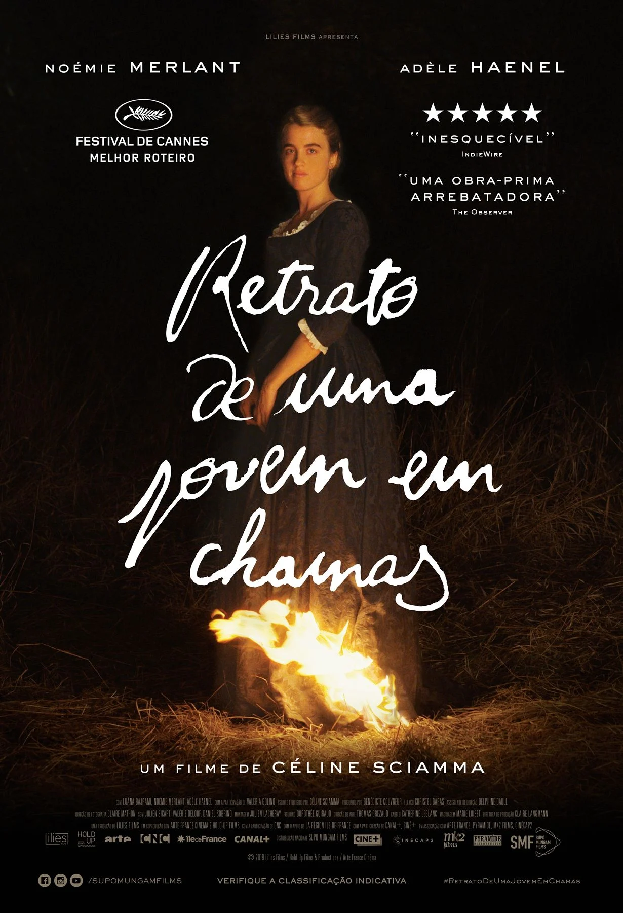
2019 • Dir. Céline Sciamma
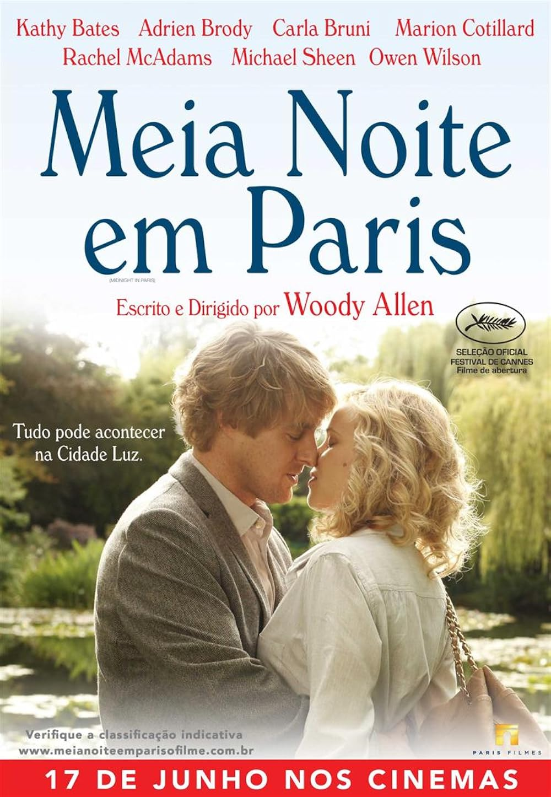
2011 • Dir. Woody Allen
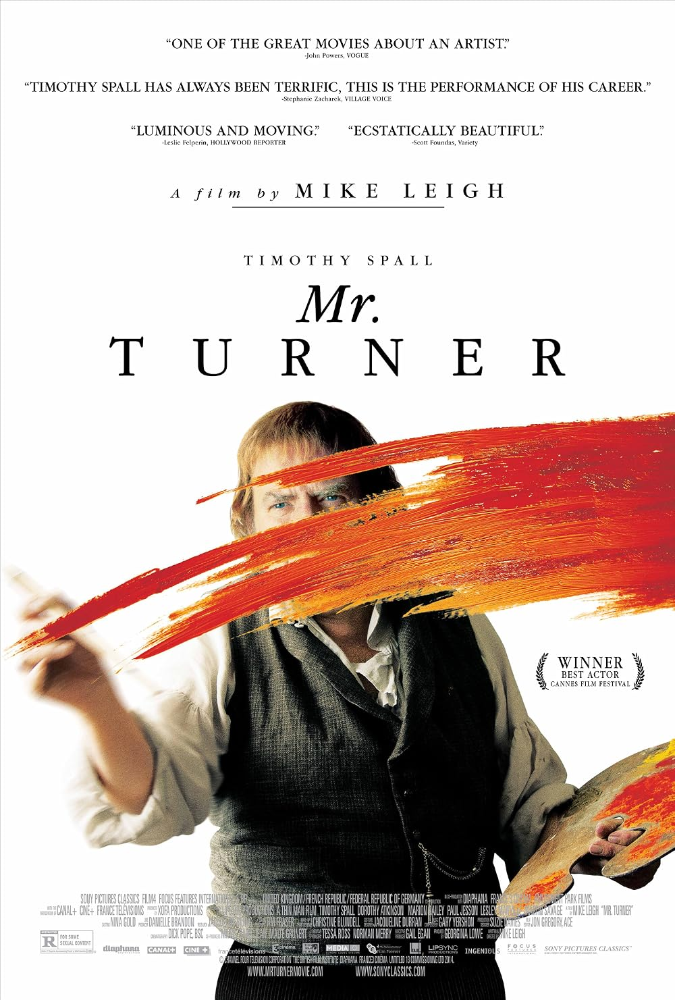
2014 • Dir. Mike Leigh
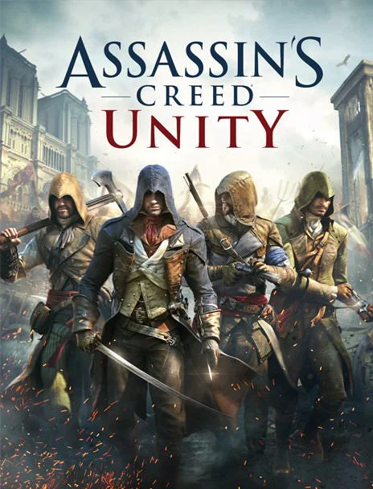
2014 • Ubisoft
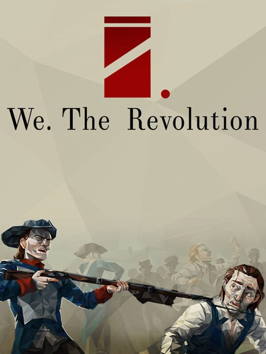
2019 • Polyslash
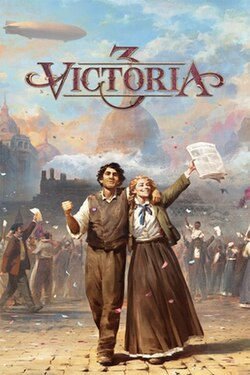
2022 • Paradox Interactive
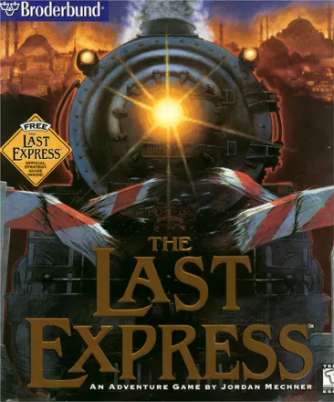
1997 • Brøderbund
Os poetas parnasianos comparavam o trabalho de escrita de um poema ao de um ourives ou escultor. A famosa metáfora do "ourives" resume a ideia de que a poesia exigia lapidação constante, polimento rigoroso das rimas, busca obsessiva pelo vocabulário culto e eliminação de qualquer vestígio de emoção espontânea ou descuidada.